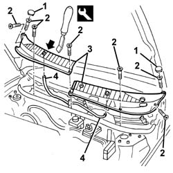

7210E22 R.R. WINDSCREEN BASE TRIM
- Path
- Procedures > 72 PANELS AND FRAME > 7210 REMOVING REFITTING > 7210E external parts > 7210E22 R.R. WINDSCREEN BASE TRIM
- Kind
- repair procedure (removal / refitting; the operation number is the code)
- Applies to
- all engines; all production periods
- Interactive page
- https://sloeber94.github.io/elrnDB-a156/en/#/3239047
Applies to: all engines; all production periods
 Removing
Removing
 Refitting
Refitting5050B34 windscreen wiper arm/s complete with blade - r+r (left and right sides)
1. Remove the guards.
2. Unscrew the bolts
3. Remove the trim pieces from the retainers using the appropriate tool, then move them aside slightly.
 | Name | Country |
|---|---|---|
3 | Scraper blade | 1.823.014.000 |
4. Disconnect the windscreen washer jet pipes and save the trim pieces.

Applies to: all engines; all production periods
Refitting
RemovingCheck that the trims are not damaged.
Connect the pipes to the windscreen washer jets.
Refit the trim pieces, fitting them on the retainers.
Tighten the screws.
Fit the guards.
Check that the windscreen washer jets are working.
5050B34 windscreen wiper arm/s complete with blade - r+r
Check that the windscreen wiper is working properly.